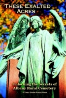

|
Where the
With publication of Paul Grondahl's These Exalted Acres: Unlocking the Secrets of Albany Rural Cemetery, its complimentary website with its interactive map, and associated media outlets in December 2013, Albany's outstanding iconic legacy has its first functional primer. It is highly recommended as it truly does unlock the many mysteries of the venerable old park that is still a working cemetery. Over the years (and shamelessly on many occasions), friends, family, and associates have accompanied me there for a range of reasons - all of which had the common denominator of being a good and useful time. Or, as I am too fond of saying, "hours of fun!" I am not alone in this fascination as a simple Google search will reveal that the Albany Rural Cemetery means many many things to a wide range of people! With the first burial there not until 1845, the Albany Rural Cemetery is not the burial grounds for the people who founded and built the city of Albany during the 17th and 18th centuries. We have made their passing and interments the subject of a theme essay entitled Burying the Dead in Early Albany. Paul's comprehensive guide brings many of their stories up to date. However, gravestones and "remains" of some of the people of colonial Albany have made their ways to Albany Rural from the 1840s until just recently while present day or "new" interments continue to take place. My grandparents were buried there during the early 1960s and a drive through the rural avenues and narrow lanes almost never fails to reveal a recent or in-progress burial. At the same time, after having logged hundreds of hours there since the 1960s, I am certain that today's outdoor historical site represents a prime victorianizing experience. Any time there cannot help but transport one back to the nineteenth century. Grab a copy of These Exalted Acres (and/or your smart phone) and head to Menands whenever the mood strikes. Although I hope to refrain from just repeating the narrative history of Albany Rural, this page is a work in-progress and will continue to provide interpretive thoughts on the life (and hopefully not the death) of Albany Rural Cemetery. Home | Site Index | Navigation | Email | New York State Museum
Cemetery sign adapted from Albany
Daily Photo - a worthy resource in its own right! first posted 12/22/13; last updated 2/20/14 |